Topic 19: Multiple Linear Regression#
onl01-dtsc-ft-022221
04/08/21
LEARNING OBJECTIVES#
Learn how to expand our last lesson to include multiple independent variables.
Learn ways to deal with categorical variables.
Learn about multicollinearity of features
Learn about how to improve a baseline model based on results
Learn how to run a multiple regression using statsmodels
Resources:#
OSEMN Data Science Workflow Notebook
student_OSEMN.ipynb: also included in notes repo
Announcements#
Topic 20:
Final CL Recordings renamed to Topic 20+
Since they added sklearn linear regression, we can discuss concepts from topic 20 more readily. Will discuss either tomorrow or Tuesday depending on how far we get today.
Questions?#
Revisiting Our Simple Linear Regression Modeling with Movies#
PREVIOUSLY ON… Topic 18#
We discussed the assumptions for a linear regression:
Linear relationship between predictor and target variable.
Predictor (x) and its error terms have a normal distribution
Homoskedasticity ( variance of residuals is constant)
We learned how to run a single regession in statsmodels
Imports & Loading Data#
## Importing our study group functions
%load_ext autoreload
%autoreload 2
import sys
py_folder = "../../py_files/" # CHANGE TO REFECT YOUR NOTEBOOKS LOCATION COMPARED TO THE PY_FILES FOLDER
sys.path.append(py_folder)
import functions_SG as sg
The autoreload extension is already loaded. To reload it, use:
%reload_ext autoreload
import pandas as pd
import numpy as np
import matplotlib as mpl
import matplotlib.pyplot as plt
import seaborn as sns
import statsmodels.api as sm
import statsmodels.stats.api as sms
import statsmodels.formula.api as smf
from scipy import stats
plt.style.use('seaborn-notebook')
# plt.rcParams['figure.figsize'] = [10,6]
pd.set_option('display.float_format', lambda x: f"{x:,}")
pd.set_option('display.max_columns',0)
### NEW MOVIE DATASET
def load_movie_data(verbose=True,include_genre=False):
## Thanks to Johnny Dryma for letting us use his data
movie_data_url = "https://raw.githubusercontent.com/Drymander/dsc-phase-1-project/master/data/2012-2019%20FULL.csv"
dfm = pd.read_csv(movie_data_url,index_col=0,parse_dates=['release_date'])
## List of cols that need processsing before use
# cols_need_processing=['genres','production_companies',
# 'belongs_to_collection']
## Save only the columns of interest
df = dfm[['id','imdb_id','original_title','title','genres','mpaa_rating',
'release_date','runtime','budget','revenue',
'vote_count','vote_average','popularity','adult','original_language']].copy()
## Keep only movies with financial data
df=df[(df['budget']>0) & (df['revenue']>0)]
if include_genre==True:
df['genre_list'] = df['genres'].map(lambda x: eval(x))
df['genre_list'] = df['genre_list'].map(lambda x: [g['name'] for g in x])
else:
## Dropping genres isntead
df.drop(columns=['genres'],inplace=True)
## Feature Engineering
# df['profit'] = df['revenue'] - df['budget']
# df['ROI'] = df['profit']/df['budget']
## Removing Extreme values for class purposes
# df=df[df['ROI']<1000]
## Drop nulls & reset index
df.dropna(inplace=True)
df.set_index('id',inplace=True)
if verbose:
display(df.head(),df.info())
return df
df = load_movie_data()
<class 'pandas.core.frame.DataFrame'>
Int64Index: 1300 entries, 24428 to 630331
Data columns (total 13 columns):
# Column Non-Null Count Dtype
--- ------ -------------- -----
0 imdb_id 1300 non-null object
1 original_title 1300 non-null object
2 title 1300 non-null object
3 mpaa_rating 1300 non-null object
4 release_date 1300 non-null datetime64[ns]
5 runtime 1300 non-null float64
6 budget 1300 non-null int64
7 revenue 1300 non-null int64
8 vote_count 1300 non-null int64
9 vote_average 1300 non-null float64
10 popularity 1300 non-null float64
11 adult 1300 non-null bool
12 original_language 1300 non-null object
dtypes: bool(1), datetime64[ns](1), float64(3), int64(3), object(5)
memory usage: 133.3+ KB
| imdb_id | original_title | title | mpaa_rating | release_date | runtime | budget | revenue | vote_count | vote_average | popularity | adult | original_language | |
|---|---|---|---|---|---|---|---|---|---|---|---|---|---|
| id | |||||||||||||
| 24428 | tt0848228 | The Avengers | The Avengers | PG-13 | 2012-04-25 | 143.0 | 220000000 | 1518815515 | 24252 | 7.7 | 151.095 | False | en |
| 50620 | tt1673434 | The Twilight Saga: Breaking Dawn - Part 2 | The Twilight Saga: Breaking Dawn - Part 2 | PG-13 | 2012-11-13 | 115.0 | 120000000 | 829000000 | 6978 | 6.5 | 73.226 | False | en |
| 82690 | tt1772341 | Wreck-It Ralph | Wreck-It Ralph | PG | 2012-11-01 | 101.0 | 165000000 | 471222889 | 9690 | 7.3 | 70.21300000000001 | False | en |
| 57214 | tt1636826 | Project X | Project X | R | 2012-03-01 | 88.0 | 12000000 | 100000000 | 4399 | 6.7 | 67.687 | False | en |
| 49051 | tt0903624 | The Hobbit: An Unexpected Journey | The Hobbit: An Unexpected Journey | PG-13 | 2012-11-26 | 169.0 | 250000000 | 1021103568 | 14539 | 7.3 | 61.052 | False | en |
None
Simple Linear Regression Regression#
## Scatter Plots for Linearity Check
def plot_data(X='budget',y='revenue',data=df,fit_reg=False):
priceFmt = mpl.ticker.StrMethodFormatter("${x:,.0f}")
ax = sns.regplot(x=X,y=y,data=data,fit_reg=fit_reg)
ax.yaxis.set_major_formatter(priceFmt)
fig=ax.get_figure()
return fig,ax
Use one \(X\) variable to predict \(y\)
plot_data(X='budget',y='revenue',data=df,fit_reg=True);
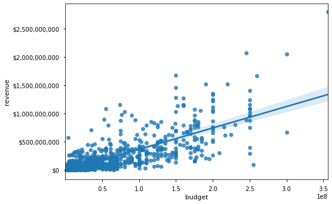
Our Baseline Simple Linear Regression#
f = "revenue~budget"
model1 = smf.ols(f,df).fit()
display(model1.summary())
fig = sm.graphics.qqplot(model1.resid,dist=stats.norm,fit=True,line='45')
fig = sm.graphics.plot_regress_exog(model1, "budget", fig=plt.figure(figsize=(12,8)))
| Dep. Variable: | revenue | R-squared: | 0.621 |
|---|---|---|---|
| Model: | OLS | Adj. R-squared: | 0.621 |
| Method: | Least Squares | F-statistic: | 2127. |
| Date: | Thu, 08 Apr 2021 | Prob (F-statistic): | 9.19e-276 |
| Time: | 14:47:08 | Log-Likelihood: | -26440. |
| No. Observations: | 1300 | AIC: | 5.288e+04 |
| Df Residuals: | 1298 | BIC: | 5.289e+04 |
| Df Model: | 1 | ||
| Covariance Type: | nonrobust |
| coef | std err | t | P>|t| | [0.025 | 0.975] | |
|---|---|---|---|---|---|---|
| Intercept | -1.858e+07 | 5.93e+06 | -3.136 | 0.002 | -3.02e+07 | -6.96e+06 |
| budget | 3.7903 | 0.082 | 46.120 | 0.000 | 3.629 | 3.951 |
| Omnibus: | 708.628 | Durbin-Watson: | 1.877 |
|---|---|---|---|
| Prob(Omnibus): | 0.000 | Jarque-Bera (JB): | 12328.555 |
| Skew: | 2.134 | Prob(JB): | 0.00 |
| Kurtosis: | 17.470 | Cond. No. | 9.35e+07 |
Notes:
[1] Standard Errors assume that the covariance matrix of the errors is correctly specified.
[2] The condition number is large, 9.35e+07. This might indicate that there are
strong multicollinearity or other numerical problems.
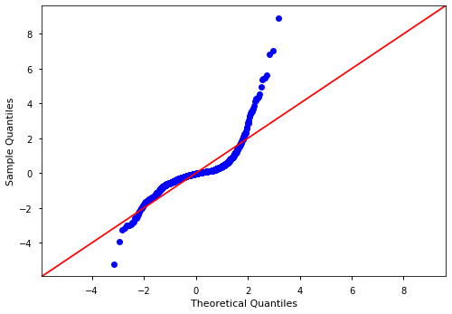
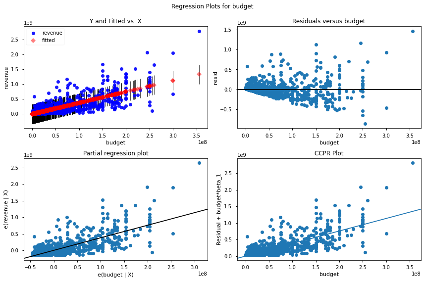
Our Second Model After Removing Outliers#
## Visualize Data WITH outliers
sns.jointplot(data=df,x='budget',y='revenue')
<seaborn.axisgrid.JointGrid at 0x7fcaa7c02eb0>
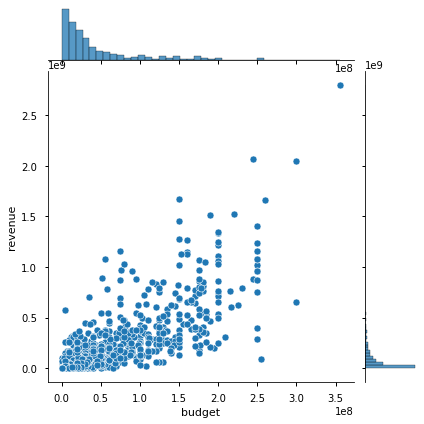
## Get X outliers
X_outliers_IQR = sg.find_outliers_IQR(df['budget'])
y_outliers_IQR = sg.find_outliers_IQR(df['revenue'])
## Combine outliers
idx_outliers_IQR = X_outliers_IQR | y_outliers_IQR
idx_outliers_IQR.sum()
## Create df_clean
df_clean = df[~idx_outliers_IQR].copy()
sns.jointplot(data=df_clean,x='budget',y='revenue')
df_clean.head(2)
| imdb_id | original_title | title | mpaa_rating | release_date | runtime | budget | revenue | vote_count | vote_average | popularity | adult | original_language | |
|---|---|---|---|---|---|---|---|---|---|---|---|---|---|
| id | |||||||||||||
| 57214 | tt1636826 | Project X | Project X | R | 2012-03-01 | 88.0 | 12000000 | 100000000 | 4399 | 6.7 | 67.687 | False | en |
| 70981 | tt1446714 | Prometheus | Prometheus | R | 2012-05-30 | 124.0 | 130000000 | 403170142 | 9183 | 6.5 | 46.651 | False | en |
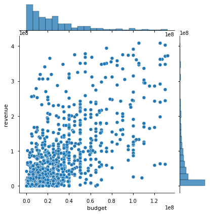
## Get the model params
f = "revenue~budget"
model = smf.ols(f,df_clean).fit()
display(model.summary())
sm.graphics.qqplot(model.resid,dist=stats.norm,line='45',fit=True);
sm.graphics.plot_regress_exog(model,'budget',plt.figure(figsize=(12,8)));
| Dep. Variable: | revenue | R-squared: | 0.439 |
|---|---|---|---|
| Model: | OLS | Adj. R-squared: | 0.439 |
| Method: | Least Squares | F-statistic: | 881.0 |
| Date: | Thu, 08 Apr 2021 | Prob (F-statistic): | 1.98e-143 |
| Time: | 14:47:11 | Log-Likelihood: | -21900. |
| No. Observations: | 1126 | AIC: | 4.380e+04 |
| Df Residuals: | 1124 | BIC: | 4.381e+04 |
| Df Model: | 1 | ||
| Covariance Type: | nonrobust |
| coef | std err | t | P>|t| | [0.025 | 0.975] | |
|---|---|---|---|---|---|---|
| Intercept | 1.332e+07 | 2.86e+06 | 4.649 | 0.000 | 7.7e+06 | 1.89e+07 |
| budget | 2.1166 | 0.071 | 29.682 | 0.000 | 1.977 | 2.257 |
| Omnibus: | 290.848 | Durbin-Watson: | 1.675 |
|---|---|---|---|
| Prob(Omnibus): | 0.000 | Jarque-Bera (JB): | 825.435 |
| Skew: | 1.306 | Prob(JB): | 5.74e-180 |
| Kurtosis: | 6.282 | Cond. No. | 5.70e+07 |
Notes:
[1] Standard Errors assume that the covariance matrix of the errors is correctly specified.
[2] The condition number is large, 5.7e+07. This might indicate that there are
strong multicollinearity or other numerical problems.
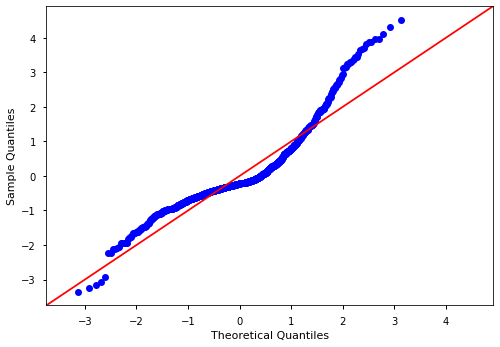
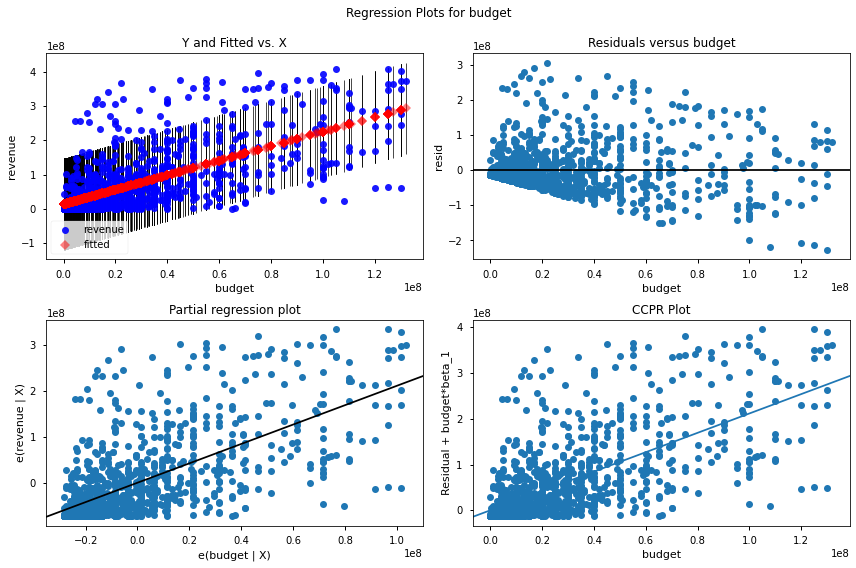
Multiple Linear Regression#
Today’s Objectives#
Briefly discuss big-picture re: multiple linear regressions vs simple linear regressions.
Discuss ways to handle categorical data.
Discuss a fourth assumption with Multiple Regression - Assumption of No Multicollinearity
Extend yesterday’s task to use multiple features from the movie dataset.
Multiple Predictor (X) Variables#

\(\hat Y\) vs \(Y\)#
Y: Actual value corresponding to a specific X value
“Y hat” (\(\hat Y\)): Predicted value predicted fromn a specific X value.
where \(n\) is the number of predictors, \(\beta_0\) is the intercept, and \(\hat y\) is the so-called “fitted line” or the predicted value associated with the dependent variable.
DEALING WITH CATEGORICAL VARIABLES#
What are categorical variables?
Understand creating dummy variables for predictors.
Use pandas and Scikit-Learn to create dumies
Understand and avoid the “dummy variable trap”
What are categorical variables?#
Variables that do not represent a continuous/ordinal number.
Identifying categorical variables:#
What to look for?
Column dtype is ‘object’
Use
df.describe()- check for min/max. Are they integers?Use scatterplots & histograms - look for columns of datapoints
## Check dtypes
df.info()
<class 'pandas.core.frame.DataFrame'>
Int64Index: 1300 entries, 24428 to 630331
Data columns (total 13 columns):
# Column Non-Null Count Dtype
--- ------ -------------- -----
0 imdb_id 1300 non-null object
1 original_title 1300 non-null object
2 title 1300 non-null object
3 mpaa_rating 1300 non-null object
4 release_date 1300 non-null datetime64[ns]
5 runtime 1300 non-null float64
6 budget 1300 non-null int64
7 revenue 1300 non-null int64
8 vote_count 1300 non-null int64
9 vote_average 1300 non-null float64
10 popularity 1300 non-null float64
11 adult 1300 non-null bool
12 original_language 1300 non-null object
dtypes: bool(1), datetime64[ns](1), float64(3), int64(3), object(5)
memory usage: 133.3+ KB
## Can use select_dtypes
cat_cols = list(df.select_dtypes('O').columns)
cat_cols
['imdb_id', 'original_title', 'title', 'mpaa_rating', 'original_language']
## can do the same for numeric
num_cols =list(df.select_dtypes('number').columns)
num_cols
['runtime', 'budget', 'revenue', 'vote_count', 'vote_average', 'popularity']
## Check describe
df.describe()
| runtime | budget | revenue | vote_count | vote_average | popularity | |
|---|---|---|---|---|---|---|
| count | 1,300.0 | 1,300.0 | 1,300.0 | 1,300.0 | 1,300.0 | 1,300.0 |
| mean | 109.34153846153846 | 45,900,017.192307696 | 155,390,520.90076923 | 3,048.479230769231 | 6.407538461538461 | 34.06769615384615 |
| std | 16.982950217591988 | 55,641,755.675761335 | 267,617,277.28683838 | 3,757.7980193390854 | 0.940552522610109 | 37.70137389978608 |
| min | 78.0 | 10.0 | 1.0 | 0.0 | 0.0 | 0.6 |
| 25% | 96.0 | 10,000,000.0 | 10,276,110.0 | 602.0 | 5.9 | 14.20425 |
| 50% | 107.0 | 25,000,000.0 | 52,410,264.5 | 1,638.5 | 6.4 | 22.548499999999997 |
| 75% | 119.0 | 58,850,000.0 | 170,262,729.25 | 4,059.5 | 7.0 | 38.3885 |
| max | 188.0 | 356,000,000.0 | 2,797,800,564.0 | 25,296.0 | 9.0 | 397.25699999999995 |
## Inspect the Value Counts for Each Str Col
for col in cat_cols:
display(df[col].value_counts(dropna=False).sort_index())
print()
tt0249516 1
tt0337692 1
tt0359950 1
tt0365907 1
tt0369610 1
..
tt8772262 1
tt8946378 1
tt9134216 1
tt9285882 1
tt9735328 1
Name: imdb_id, Length: 1300, dtype: int64
'71 1
10 Cloverfield Lane 1
12 Strong 1
12 Years a Slave 1
13 Hours: The Secret Soldiers of Benghazi 1
..
Zoolander 2 1
Zootopia 1
mother! 1
xXx: Return of Xander Cage 1
新兵正传 1
Name: original_title, Length: 1300, dtype: int64
'71 1
10 Cloverfield Lane 1
12 Strong 1
12 Years a Slave 1
13 Hours: The Secret Soldiers of Benghazi 1
..
Zombieland: Double Tap 1
Zoolander 2 1
Zootopia 1
mother! 1
xXx: Return of Xander Cage 1
Name: title, Length: 1300, dtype: int64
G 9
NC-17 1
NR 22
PG 173
PG-13 498
R 597
Name: mpaa_rating, dtype: int64
en 1300
Name: original_language, dtype: int64
Transforming Categorical Variables#
To use categorical variables for regression, they must be transformed. There are 2 methods to dealing with them:
~~Label Encoding~~ (not intended for X data!)
Replace string categories with integer values (0 to n)
Can be done with:
Pandas
Scikit Learn
One-hot / dummy encoding
Turn each category in a categorical variable into its own variable, that is either a 0 or 1. 0 for rows that do not belong to that sub-category. 1 for rows that belong to the sub-category
Can be done with:
Pandas
Scikit Learn
Label Encoding#
## Check the Value Counts for our test column
df['mpaa_rating'].value_counts(normalize=True)
R 0.4592307692307692
PG-13 0.3830769230769231
PG 0.13307692307692306
NR 0.016923076923076923
G 0.006923076923076923
NC-17 0.0007692307692307692
Name: mpaa_rating, dtype: float64
Via pandas.cat.codes#
## Label Encode with .cat.codesd
df['mpaa_rating'] = df['mpaa_rating'].astype('category')
df['mpaa_rating'].cat.codes.value_counts(normalize=True)
5 0.4592307692307692
4 0.3830769230769231
3 0.13307692307692306
2 0.016923076923076923
0 0.006923076923076923
1 0.0007692307692307692
dtype: float64
Via Sklearn’s LabelEncoder#
## Using sklearn LabelEncoder
from sklearn.preprocessing import LabelEncoder
encoder = LabelEncoder()
rating_enc = encoder.fit_transform(df['mpaa_rating'])
rating_enc
array([4, 4, 3, ..., 5, 5, 2])
encoder.inverse_transform(rating_enc)
array(['PG-13', 'PG-13', 'PG', ..., 'R', 'R', 'NR'], dtype=object)
Dummy Encoding / One-Hot Encoding#
Via Pandas.get_dummies()#
df['mpaa_rating'].unique()
['PG-13', 'PG', 'R', 'NR', 'G', 'NC-17']
Categories (6, object): ['PG-13', 'PG', 'R', 'NR', 'G', 'NC-17']
df_dummies = pd.get_dummies(df['mpaa_rating'],drop_first=True)
df_dummies
| NC-17 | NR | PG | PG-13 | R | |
|---|---|---|---|---|---|
| id | |||||
| 24428 | 0 | 0 | 0 | 1 | 0 |
| 50620 | 0 | 0 | 0 | 1 | 0 |
| 82690 | 0 | 0 | 1 | 0 | 0 |
| 57214 | 0 | 0 | 0 | 0 | 1 |
| 49051 | 0 | 0 | 0 | 1 | 0 |
| ... | ... | ... | ... | ... | ... |
| 403300 | 0 | 0 | 0 | 1 | 0 |
| 520900 | 0 | 0 | 1 | 0 | 0 |
| 616584 | 0 | 0 | 0 | 0 | 1 |
| 619265 | 0 | 0 | 0 | 0 | 1 |
| 630331 | 0 | 1 | 0 | 0 | 0 |
1300 rows × 5 columns
df_dummies = pd.get_dummies(df,columns=['mpaa_rating'],drop_first=True)
df_dummies
| imdb_id | original_title | title | release_date | runtime | budget | revenue | vote_count | vote_average | popularity | adult | original_language | mpaa_rating_NC-17 | mpaa_rating_NR | mpaa_rating_PG | mpaa_rating_PG-13 | mpaa_rating_R | |
|---|---|---|---|---|---|---|---|---|---|---|---|---|---|---|---|---|---|
| id | |||||||||||||||||
| 24428 | tt0848228 | The Avengers | The Avengers | 2012-04-25 | 143.0 | 220000000 | 1518815515 | 24252 | 7.7 | 151.095 | False | en | 0 | 0 | 0 | 1 | 0 |
| 50620 | tt1673434 | The Twilight Saga: Breaking Dawn - Part 2 | The Twilight Saga: Breaking Dawn - Part 2 | 2012-11-13 | 115.0 | 120000000 | 829000000 | 6978 | 6.5 | 73.226 | False | en | 0 | 0 | 0 | 1 | 0 |
| 82690 | tt1772341 | Wreck-It Ralph | Wreck-It Ralph | 2012-11-01 | 101.0 | 165000000 | 471222889 | 9690 | 7.3 | 70.21300000000001 | False | en | 0 | 0 | 1 | 0 | 0 |
| 57214 | tt1636826 | Project X | Project X | 2012-03-01 | 88.0 | 12000000 | 100000000 | 4399 | 6.7 | 67.687 | False | en | 0 | 0 | 0 | 0 | 1 |
| 49051 | tt0903624 | The Hobbit: An Unexpected Journey | The Hobbit: An Unexpected Journey | 2012-11-26 | 169.0 | 250000000 | 1021103568 | 14539 | 7.3 | 61.052 | False | en | 0 | 0 | 0 | 1 | 0 |
| ... | ... | ... | ... | ... | ... | ... | ... | ... | ... | ... | ... | ... | ... | ... | ... | ... | ... |
| 403300 | tt5827916 | A Hidden Life | A Hidden Life | 2019-12-11 | 174.0 | 9000000 | 4612788 | 370 | 7.2 | 15.434000000000001 | False | en | 0 | 0 | 0 | 1 | 0 |
| 520900 | tt6439020 | The Personal History of David Copperfield | The Personal History of David Copperfield | 2019-11-07 | 119.0 | 15600000 | 11620337 | 211 | 6.7 | 15.075999999999999 | False | en | 0 | 0 | 1 | 0 | 0 |
| 616584 | tt10521814 | K-12 | K-12 | 2019-09-05 | 92.0 | 50000 | 359377 | 171 | 7.6 | 14.822000000000001 | False | en | 0 | 0 | 0 | 0 | 1 |
| 619265 | tt10555920 | The Cabin House | The Cabin House | 2019-10-31 | 120.0 | 13000000 | 13000000 | 0 | 0.0 | 2.0709999999999997 | False | en | 0 | 0 | 0 | 0 | 1 |
| 630331 | tt10931434 | Cin-Si Bozuk | Cin-Si Bozuk | 2019-09-06 | 95.0 | 46 | 5 | 0 | 0.0 | 0.622 | False | en | 0 | 1 | 0 | 0 | 0 |
1300 rows × 17 columns
Via Scikit-Learn’s OneHotEncoder#
cat_cols
['imdb_id', 'original_title', 'title', 'mpaa_rating', 'original_language']
cat_cols = ['mpaa_rating']
from sklearn.preprocessing import OneHotEncoder
encoder = OneHotEncoder(drop='first',sparse=False)
encoder.fit(df[cat_cols])
OneHotEncoder(drop='first', sparse=False)
ohe_vars = encoder.transform(df[cat_cols])
ohe_vars
# pd.DataFrame(ohe_vars,columns=binarizer.classes_)
array([[0., 0., 0., 1., 0.],
[0., 0., 0., 1., 0.],
[0., 0., 1., 0., 0.],
...,
[0., 0., 0., 0., 1.],
[0., 0., 0., 0., 1.],
[0., 1., 0., 0., 0.]])
encoder.get_feature_names(cat_cols)
array(['mpaa_rating_NC-17', 'mpaa_rating_NR', 'mpaa_rating_PG',
'mpaa_rating_PG-13', 'mpaa_rating_R'], dtype=object)
cat_vars = pd.DataFrame(ohe_vars,columns=encoder.get_feature_names(cat_cols))
cat_vars
| mpaa_rating_NC-17 | mpaa_rating_NR | mpaa_rating_PG | mpaa_rating_PG-13 | mpaa_rating_R | |
|---|---|---|---|---|---|
| 0 | 0.0 | 0.0 | 0.0 | 1.0 | 0.0 |
| 1 | 0.0 | 0.0 | 0.0 | 1.0 | 0.0 |
| 2 | 0.0 | 0.0 | 1.0 | 0.0 | 0.0 |
| 3 | 0.0 | 0.0 | 0.0 | 0.0 | 1.0 |
| 4 | 0.0 | 0.0 | 0.0 | 1.0 | 0.0 |
| ... | ... | ... | ... | ... | ... |
| 1295 | 0.0 | 0.0 | 0.0 | 1.0 | 0.0 |
| 1296 | 0.0 | 0.0 | 1.0 | 0.0 | 0.0 |
| 1297 | 0.0 | 0.0 | 0.0 | 0.0 | 1.0 |
| 1298 | 0.0 | 0.0 | 0.0 | 0.0 | 1.0 |
| 1299 | 0.0 | 1.0 | 0.0 | 0.0 | 0.0 |
1300 rows × 5 columns
The Dummy Variable Trap#
pd.get_dummies(df['mpaa_rating'], drop_first=True)
| NC-17 | NR | PG | PG-13 | R | |
|---|---|---|---|---|---|
| id | |||||
| 24428 | 0 | 0 | 0 | 1 | 0 |
| 50620 | 0 | 0 | 0 | 1 | 0 |
| 82690 | 0 | 0 | 1 | 0 | 0 |
| 57214 | 0 | 0 | 0 | 0 | 1 |
| 49051 | 0 | 0 | 0 | 1 | 0 |
| ... | ... | ... | ... | ... | ... |
| 403300 | 0 | 0 | 0 | 1 | 0 |
| 520900 | 0 | 0 | 1 | 0 | 0 |
| 616584 | 0 | 0 | 0 | 0 | 1 |
| 619265 | 0 | 0 | 0 | 0 | 1 |
| 630331 | 0 | 1 | 0 | 0 | 0 |
1300 rows × 5 columns
sns.catplot(data=df, x='mpaa_rating',y='revenue')
<seaborn.axisgrid.FacetGrid at 0x7fcaa8f23ac0>
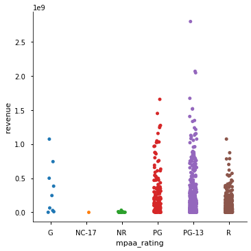
Activity: Multiple Linear Regression with Movies#
## Load in our data fresh
df = load_movie_data(verbose=False)
df.head(2)
| imdb_id | original_title | title | mpaa_rating | release_date | runtime | budget | revenue | vote_count | vote_average | popularity | adult | original_language | |
|---|---|---|---|---|---|---|---|---|---|---|---|---|---|
| id | |||||||||||||
| 24428 | tt0848228 | The Avengers | The Avengers | PG-13 | 2012-04-25 | 143.0 | 220000000 | 1518815515 | 24252 | 7.7 | 151.095 | False | en |
| 50620 | tt1673434 | The Twilight Saga: Breaking Dawn - Part 2 | The Twilight Saga: Breaking Dawn - Part 2 | PG-13 | 2012-11-13 | 115.0 | 120000000 | 829000000 | 6978 | 6.5 | 73.226 | False | en |
## Check dtypes,etc
df.info()
<class 'pandas.core.frame.DataFrame'>
Int64Index: 1300 entries, 24428 to 630331
Data columns (total 13 columns):
# Column Non-Null Count Dtype
--- ------ -------------- -----
0 imdb_id 1300 non-null object
1 original_title 1300 non-null object
2 title 1300 non-null object
3 mpaa_rating 1300 non-null object
4 release_date 1300 non-null datetime64[ns]
5 runtime 1300 non-null float64
6 budget 1300 non-null int64
7 revenue 1300 non-null int64
8 vote_count 1300 non-null int64
9 vote_average 1300 non-null float64
10 popularity 1300 non-null float64
11 adult 1300 non-null bool
12 original_language 1300 non-null object
dtypes: bool(1), datetime64[ns](1), float64(3), int64(3), object(5)
memory usage: 133.3+ KB
df.dtypes
imdb_id object
original_title object
title object
mpaa_rating object
release_date datetime64[ns]
runtime float64
budget int64
revenue int64
vote_count int64
vote_average float64
popularity float64
adult bool
original_language object
dtype: object
## Check nulls
df.isnull().sum()
imdb_id 0
original_title 0
title 0
mpaa_rating 0
release_date 0
runtime 0
budget 0
revenue 0
vote_count 0
vote_average 0
popularity 0
adult 0
original_language 0
dtype: int64
## Inspect the numeric columns
df.describe()
| runtime | budget | revenue | vote_count | vote_average | popularity | |
|---|---|---|---|---|---|---|
| count | 1,300.0 | 1,300.0 | 1,300.0 | 1,300.0 | 1,300.0 | 1,300.0 |
| mean | 109.34153846153846 | 45,900,017.192307696 | 155,390,520.90076923 | 3,048.479230769231 | 6.407538461538461 | 34.06769615384615 |
| std | 16.982950217591988 | 55,641,755.675761335 | 267,617,277.28683838 | 3,757.7980193390854 | 0.940552522610109 | 37.70137389978608 |
| min | 78.0 | 10.0 | 1.0 | 0.0 | 0.0 | 0.6 |
| 25% | 96.0 | 10,000,000.0 | 10,276,110.0 | 602.0 | 5.9 | 14.20425 |
| 50% | 107.0 | 25,000,000.0 | 52,410,264.5 | 1,638.5 | 6.4 | 22.548499999999997 |
| 75% | 119.0 | 58,850,000.0 | 170,262,729.25 | 4,059.5 | 7.0 | 38.3885 |
| max | 188.0 | 356,000,000.0 | 2,797,800,564.0 | 25,296.0 | 9.0 | 397.25699999999995 |
df.nunique()
imdb_id 1300
original_title 1300
title 1300
mpaa_rating 6
release_date 928
runtime 89
budget 232
revenue 1297
vote_count 1154
vote_average 50
popularity 1283
adult 1
original_language 1
dtype: int64
import missingno
missingno.matrix(df)
<AxesSubplot:>
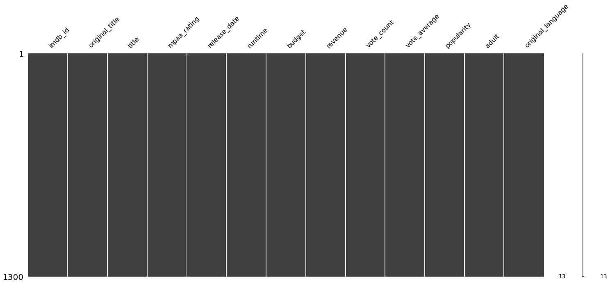
Encode Categorical Data#
## Remake final cat cols
cat_cols = ['mpaa_rating']
# df[cat_cols]
## Create encoded vars
from sklearn.preprocessing import OneHotEncoder
encoder = OneHotEncoder(sparse=False, drop='first')
encoder
OneHotEncoder(drop='first', sparse=False)
## make encoded vars_df
data_ohe = encoder.fit_transform(df[cat_cols])
df_ohe = pd.DataFrame(data_ohe,columns=encoder.get_feature_names(cat_cols),
index=df.index)
df_ohe
| mpaa_rating_NC-17 | mpaa_rating_NR | mpaa_rating_PG | mpaa_rating_PG-13 | mpaa_rating_R | |
|---|---|---|---|---|---|
| id | |||||
| 24428 | 0.0 | 0.0 | 0.0 | 1.0 | 0.0 |
| 50620 | 0.0 | 0.0 | 0.0 | 1.0 | 0.0 |
| 82690 | 0.0 | 0.0 | 1.0 | 0.0 | 0.0 |
| 57214 | 0.0 | 0.0 | 0.0 | 0.0 | 1.0 |
| 49051 | 0.0 | 0.0 | 0.0 | 1.0 | 0.0 |
| ... | ... | ... | ... | ... | ... |
| 403300 | 0.0 | 0.0 | 0.0 | 1.0 | 0.0 |
| 520900 | 0.0 | 0.0 | 1.0 | 0.0 | 0.0 |
| 616584 | 0.0 | 0.0 | 0.0 | 0.0 | 1.0 |
| 619265 | 0.0 | 0.0 | 0.0 | 0.0 | 1.0 |
| 630331 | 0.0 | 1.0 | 0.0 | 0.0 | 0.0 |
1300 rows × 5 columns
## Create df model from original df and df_ohe
df_model = pd.concat([df.drop('mpaa_rating',axis=1),df_ohe],axis=1)
df_model
| imdb_id | original_title | title | release_date | runtime | budget | revenue | vote_count | vote_average | popularity | adult | original_language | mpaa_rating_NC-17 | mpaa_rating_NR | mpaa_rating_PG | mpaa_rating_PG-13 | mpaa_rating_R | |
|---|---|---|---|---|---|---|---|---|---|---|---|---|---|---|---|---|---|
| id | |||||||||||||||||
| 24428 | tt0848228 | The Avengers | The Avengers | 2012-04-25 | 143.0 | 220000000 | 1518815515 | 24252 | 7.7 | 151.095 | False | en | 0.0 | 0.0 | 0.0 | 1.0 | 0.0 |
| 50620 | tt1673434 | The Twilight Saga: Breaking Dawn - Part 2 | The Twilight Saga: Breaking Dawn - Part 2 | 2012-11-13 | 115.0 | 120000000 | 829000000 | 6978 | 6.5 | 73.226 | False | en | 0.0 | 0.0 | 0.0 | 1.0 | 0.0 |
| 82690 | tt1772341 | Wreck-It Ralph | Wreck-It Ralph | 2012-11-01 | 101.0 | 165000000 | 471222889 | 9690 | 7.3 | 70.21300000000001 | False | en | 0.0 | 0.0 | 1.0 | 0.0 | 0.0 |
| 57214 | tt1636826 | Project X | Project X | 2012-03-01 | 88.0 | 12000000 | 100000000 | 4399 | 6.7 | 67.687 | False | en | 0.0 | 0.0 | 0.0 | 0.0 | 1.0 |
| 49051 | tt0903624 | The Hobbit: An Unexpected Journey | The Hobbit: An Unexpected Journey | 2012-11-26 | 169.0 | 250000000 | 1021103568 | 14539 | 7.3 | 61.052 | False | en | 0.0 | 0.0 | 0.0 | 1.0 | 0.0 |
| ... | ... | ... | ... | ... | ... | ... | ... | ... | ... | ... | ... | ... | ... | ... | ... | ... | ... |
| 403300 | tt5827916 | A Hidden Life | A Hidden Life | 2019-12-11 | 174.0 | 9000000 | 4612788 | 370 | 7.2 | 15.434000000000001 | False | en | 0.0 | 0.0 | 0.0 | 1.0 | 0.0 |
| 520900 | tt6439020 | The Personal History of David Copperfield | The Personal History of David Copperfield | 2019-11-07 | 119.0 | 15600000 | 11620337 | 211 | 6.7 | 15.075999999999999 | False | en | 0.0 | 0.0 | 1.0 | 0.0 | 0.0 |
| 616584 | tt10521814 | K-12 | K-12 | 2019-09-05 | 92.0 | 50000 | 359377 | 171 | 7.6 | 14.822000000000001 | False | en | 0.0 | 0.0 | 0.0 | 0.0 | 1.0 |
| 619265 | tt10555920 | The Cabin House | The Cabin House | 2019-10-31 | 120.0 | 13000000 | 13000000 | 0 | 0.0 | 2.0709999999999997 | False | en | 0.0 | 0.0 | 0.0 | 0.0 | 1.0 |
| 630331 | tt10931434 | Cin-Si Bozuk | Cin-Si Bozuk | 2019-09-06 | 95.0 | 46 | 5 | 0 | 0.0 | 0.622 | False | en | 0.0 | 1.0 | 0.0 | 0.0 | 0.0 |
1300 rows × 17 columns
# missingno.matrix(df_model)
## Drop columns we don't want to use in the model
drop_cols = ['title','imdb_id','original_title','release_date','adult',
'original_language']
df_model.drop(columns=drop_cols,inplace=True)
df_model
| runtime | budget | revenue | vote_count | vote_average | popularity | mpaa_rating_NC-17 | mpaa_rating_NR | mpaa_rating_PG | mpaa_rating_PG-13 | mpaa_rating_R | |
|---|---|---|---|---|---|---|---|---|---|---|---|
| id | |||||||||||
| 24428 | 143.0 | 220000000 | 1518815515 | 24252 | 7.7 | 151.095 | 0.0 | 0.0 | 0.0 | 1.0 | 0.0 |
| 50620 | 115.0 | 120000000 | 829000000 | 6978 | 6.5 | 73.226 | 0.0 | 0.0 | 0.0 | 1.0 | 0.0 |
| 82690 | 101.0 | 165000000 | 471222889 | 9690 | 7.3 | 70.21300000000001 | 0.0 | 0.0 | 1.0 | 0.0 | 0.0 |
| 57214 | 88.0 | 12000000 | 100000000 | 4399 | 6.7 | 67.687 | 0.0 | 0.0 | 0.0 | 0.0 | 1.0 |
| 49051 | 169.0 | 250000000 | 1021103568 | 14539 | 7.3 | 61.052 | 0.0 | 0.0 | 0.0 | 1.0 | 0.0 |
| ... | ... | ... | ... | ... | ... | ... | ... | ... | ... | ... | ... |
| 403300 | 174.0 | 9000000 | 4612788 | 370 | 7.2 | 15.434000000000001 | 0.0 | 0.0 | 0.0 | 1.0 | 0.0 |
| 520900 | 119.0 | 15600000 | 11620337 | 211 | 6.7 | 15.075999999999999 | 0.0 | 0.0 | 1.0 | 0.0 | 0.0 |
| 616584 | 92.0 | 50000 | 359377 | 171 | 7.6 | 14.822000000000001 | 0.0 | 0.0 | 0.0 | 0.0 | 1.0 |
| 619265 | 120.0 | 13000000 | 13000000 | 0 | 0.0 | 2.0709999999999997 | 0.0 | 0.0 | 0.0 | 0.0 | 1.0 |
| 630331 | 95.0 | 46 | 5 | 0 | 0.0 | 0.622 | 0.0 | 1.0 | 0.0 | 0.0 | 0.0 |
1300 rows × 11 columns
df_model.describe()
| runtime | budget | revenue | vote_count | vote_average | popularity | mpaa_rating_NC-17 | mpaa_rating_NR | mpaa_rating_PG | mpaa_rating_PG-13 | mpaa_rating_R | |
|---|---|---|---|---|---|---|---|---|---|---|---|
| count | 1,300.0 | 1,300.0 | 1,300.0 | 1,300.0 | 1,300.0 | 1,300.0 | 1,300.0 | 1,300.0 | 1,300.0 | 1,300.0 | 1,300.0 |
| mean | 109.34153846153846 | 45,900,017.192307696 | 155,390,520.90076923 | 3,048.479230769231 | 6.407538461538461 | 34.06769615384615 | 0.0007692307692307692 | 0.016923076923076923 | 0.13307692307692306 | 0.3830769230769231 | 0.4592307692307692 |
| std | 16.982950217591988 | 55,641,755.675761335 | 267,617,277.28683838 | 3,757.7980193390854 | 0.940552522610109 | 37.70137389978608 | 0.027735009811261455 | 0.12903291709239778 | 0.33978856386766754 | 0.48632388956748096 | 0.49852687591716155 |
| min | 78.0 | 10.0 | 1.0 | 0.0 | 0.0 | 0.6 | 0.0 | 0.0 | 0.0 | 0.0 | 0.0 |
| 25% | 96.0 | 10,000,000.0 | 10,276,110.0 | 602.0 | 5.9 | 14.20425 | 0.0 | 0.0 | 0.0 | 0.0 | 0.0 |
| 50% | 107.0 | 25,000,000.0 | 52,410,264.5 | 1,638.5 | 6.4 | 22.548499999999997 | 0.0 | 0.0 | 0.0 | 0.0 | 0.0 |
| 75% | 119.0 | 58,850,000.0 | 170,262,729.25 | 4,059.5 | 7.0 | 38.3885 | 0.0 | 0.0 | 0.0 | 1.0 | 1.0 |
| max | 188.0 | 356,000,000.0 | 2,797,800,564.0 | 25,296.0 | 9.0 | 397.25699999999995 | 1.0 | 1.0 | 1.0 | 1.0 | 1.0 |
New Assumption: No Multicollinearity#
Multicollinearity#
An additional concern to check for.
Rule of thumb is if correlation between vars is >0.70 is too high
## Get the correlation matrix for our model_df (without the target)
corr = df_model.drop('revenue',axis=1).corr()
corr.round(2)
| runtime | budget | vote_count | vote_average | popularity | mpaa_rating_NC-17 | mpaa_rating_NR | mpaa_rating_PG | mpaa_rating_PG-13 | mpaa_rating_R | |
|---|---|---|---|---|---|---|---|---|---|---|
| runtime | 1.0 | 0.41 | 0.45 | 0.38 | 0.28 | 0.04 | -0.08 | -0.18 | 0.17 | -0.02 |
| budget | 0.41 | 1.0 | 0.64 | 0.19 | 0.53 | -0.02 | -0.09 | 0.18 | 0.25 | -0.36 |
| vote_count | 0.45 | 0.64 | 1.0 | 0.43 | 0.51 | -0.01 | -0.09 | -0.02 | 0.17 | -0.13 |
| vote_average | 0.38 | 0.19 | 0.43 | 1.0 | 0.25 | -0.0 | -0.12 | 0.08 | 0.04 | -0.07 |
| popularity | 0.28 | 0.53 | 0.51 | 0.25 | 1.0 | -0.02 | -0.08 | -0.0 | 0.14 | -0.12 |
| mpaa_rating_NC-17 | 0.04 | -0.02 | -0.01 | -0.0 | -0.02 | 1.0 | -0.0 | -0.01 | -0.02 | -0.03 |
| mpaa_rating_NR | -0.08 | -0.09 | -0.09 | -0.12 | -0.08 | -0.0 | 1.0 | -0.05 | -0.1 | -0.12 |
| mpaa_rating_PG | -0.18 | 0.18 | -0.02 | 0.08 | -0.0 | -0.01 | -0.05 | 1.0 | -0.31 | -0.36 |
| mpaa_rating_PG-13 | 0.17 | 0.25 | 0.17 | 0.04 | 0.14 | -0.02 | -0.1 | -0.31 | 1.0 | -0.73 |
| mpaa_rating_R | -0.02 | -0.36 | -0.13 | -0.07 | -0.12 | -0.03 | -0.12 | -0.36 | -0.73 | 1.0 |
## Plot this as a heatmap
sns.heatmap(corr,annot=True,cmap='Reds')
<AxesSubplot:>
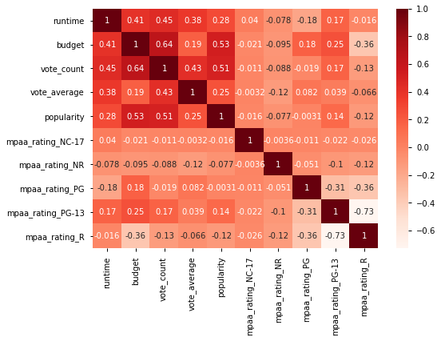
## Create a mask to make the multiplot easier to look at
mask = np.zeros_like(corr)
mask
array([[0., 0., 0., 0., 0., 0., 0., 0., 0., 0.],
[0., 0., 0., 0., 0., 0., 0., 0., 0., 0.],
[0., 0., 0., 0., 0., 0., 0., 0., 0., 0.],
[0., 0., 0., 0., 0., 0., 0., 0., 0., 0.],
[0., 0., 0., 0., 0., 0., 0., 0., 0., 0.],
[0., 0., 0., 0., 0., 0., 0., 0., 0., 0.],
[0., 0., 0., 0., 0., 0., 0., 0., 0., 0.],
[0., 0., 0., 0., 0., 0., 0., 0., 0., 0.],
[0., 0., 0., 0., 0., 0., 0., 0., 0., 0.],
[0., 0., 0., 0., 0., 0., 0., 0., 0., 0.]])
## Fill in the upper right cells with True
mask[np.triu_indices_from(mask)] = True
mask
array([[1., 1., 1., 1., 1., 1., 1., 1., 1., 1.],
[0., 1., 1., 1., 1., 1., 1., 1., 1., 1.],
[0., 0., 1., 1., 1., 1., 1., 1., 1., 1.],
[0., 0., 0., 1., 1., 1., 1., 1., 1., 1.],
[0., 0., 0., 0., 1., 1., 1., 1., 1., 1.],
[0., 0., 0., 0., 0., 1., 1., 1., 1., 1.],
[0., 0., 0., 0., 0., 0., 1., 1., 1., 1.],
[0., 0., 0., 0., 0., 0., 0., 1., 1., 1.],
[0., 0., 0., 0., 0., 0., 0., 0., 1., 1.],
[0., 0., 0., 0., 0., 0., 0., 0., 0., 1.]])
## Plot again, with the mask
sns.heatmap(corr,annot=True,cmap='Reds',mask=mask)
<AxesSubplot:>
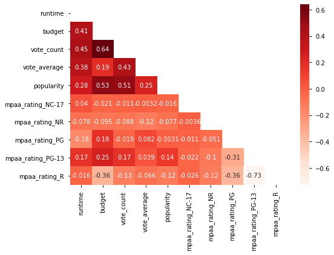
# Functionize
def multiplot(df_model,figsize=(10,10),cmap="Reds"):
corr = df_model.corr()
mask = np.zeros_like(corr)
mask[np.triu_indices_from(mask)] = True
fig, ax = plt.subplots(figsize=figsize)
sns.heatmap(corr, annot=True,cmap="Reds",mask=mask)
return fig, ax
multiplot(df_model.drop('revenue',axis=1))
(<Figure size 720x720 with 2 Axes>, <AxesSubplot:>)
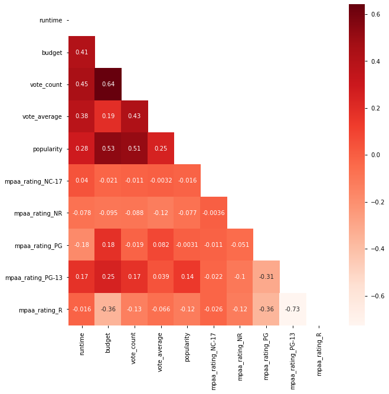
multiplot(df_model)
(<Figure size 720x720 with 2 Axes>, <AxesSubplot:>)
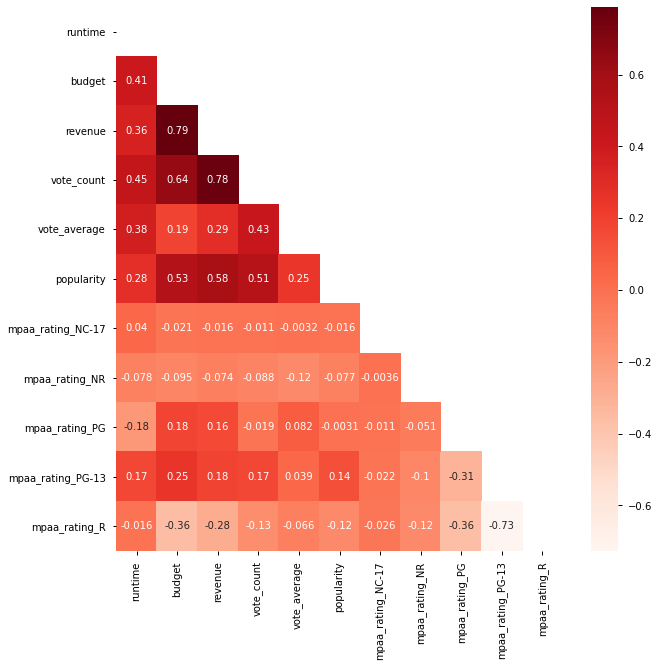
df.corr()['revenue'].round(2)
runtime 0.36
budget 0.79
revenue 1.0
vote_count 0.78
vote_average 0.29
popularity 0.58
adult nan
Name: revenue, dtype: float64
## Drop any multicollinear features
# None
## Create a string representing the right side of the ~ in our formula
features = ' + '.join(df_model.drop('revenue',axis=1).columns)
## Create the final formula and create the model
f = "revenue~"+features
model = smf.ols(f, df_model).fit()
model.summary()
RUH ROH!
Fixing Statsmodels Formulas#
##Fix df column names so there are no spaces
df.columns
Index(['imdb_id', 'original_title', 'title', 'mpaa_rating', 'release_date',
'runtime', 'budget', 'revenue', 'vote_count', 'vote_average',
'popularity', 'adult', 'original_language'],
dtype='object')
## Create a dict with new ratings names from the mpaa_rating col
ratings_list = df['mpaa_rating'].unique()
ratings_list
array(['PG-13', 'PG', 'R', 'NR', 'G', 'NC-17'], dtype=object)
## Replace the original mpaa_rating col
rating_map = {}
for rating in ratings_list:
rating_map[rating] = rating.replace('-','_')
rating_map
{'PG-13': 'PG_13',
'PG': 'PG',
'R': 'R',
'NR': 'NR',
'G': 'G',
'NC-17': 'NC_17'}
df['mpaa_rating'] = df['mpaa_rating'].replace(rating_map)
df['mpaa_rating'].unique()
array(['PG_13', 'PG', 'R', 'NR', 'G', 'NC_17'], dtype=object)
Prepare df_model again#
## Create encoded vars
encoder = OneHotEncoder(sparse=False,drop='first')
ohe_vars = encoder.fit_transform(df[cat_cols])
## make encoded vars a df
df_ohe = pd.DataFrame(ohe_vars,columns=encoder.get_feature_names(cat_cols),
index=df.index)
## Create df model from original df and df_ohe
df_model = pd.concat([df.drop(columns=cat_cols),df_ohe],axis=1)
drop_cols = ['title','imdb_id','original_title','release_date','adult',
'original_language']
df_model.drop(columns=drop_cols,inplace=True)
df_model.head()
| runtime | budget | revenue | vote_count | vote_average | popularity | mpaa_rating_NC_17 | mpaa_rating_NR | mpaa_rating_PG | mpaa_rating_PG_13 | mpaa_rating_R | |
|---|---|---|---|---|---|---|---|---|---|---|---|
| id | |||||||||||
| 24428 | 143.0 | 220000000 | 1518815515 | 24252 | 7.7 | 151.095 | 0.0 | 0.0 | 0.0 | 1.0 | 0.0 |
| 50620 | 115.0 | 120000000 | 829000000 | 6978 | 6.5 | 73.226 | 0.0 | 0.0 | 0.0 | 1.0 | 0.0 |
| 82690 | 101.0 | 165000000 | 471222889 | 9690 | 7.3 | 70.21300000000001 | 0.0 | 0.0 | 1.0 | 0.0 | 0.0 |
| 57214 | 88.0 | 12000000 | 100000000 | 4399 | 6.7 | 67.687 | 0.0 | 0.0 | 0.0 | 0.0 | 1.0 |
| 49051 | 169.0 | 250000000 | 1021103568 | 14539 | 7.3 | 61.052 | 0.0 | 0.0 | 0.0 | 1.0 | 0.0 |
multiplot(df_model.drop('revenue',axis=1))
(<Figure size 720x720 with 2 Axes>, <AxesSubplot:>)
## Drop any multicollinear features
# None
## Create a string representing the right side of the ~ in our formula
features = ' + '.join(df_model.drop('revenue',axis=1).columns)
## Create the final formula and create the model
f = "revenue~"+features
model = smf.ols(f, df_model).fit()
display(model.summary())
sm.graphics.qqplot(model.resid,line='45',fit=True);
| Dep. Variable: | revenue | R-squared: | 0.768 |
|---|---|---|---|
| Model: | OLS | Adj. R-squared: | 0.766 |
| Method: | Least Squares | F-statistic: | 425.6 |
| Date: | Thu, 08 Apr 2021 | Prob (F-statistic): | 0.00 |
| Time: | 15:19:26 | Log-Likelihood: | -26122. |
| No. Observations: | 1300 | AIC: | 5.227e+04 |
| Df Residuals: | 1289 | BIC: | 5.232e+04 |
| Df Model: | 10 | ||
| Covariance Type: | nonrobust |
| coef | std err | t | P>|t| | [0.025 | 0.975] | |
|---|---|---|---|---|---|---|
| Intercept | 1.103e+08 | 5.38e+07 | 2.049 | 0.041 | 4.68e+06 | 2.16e+08 |
| runtime | -5.352e+05 | 2.64e+05 | -2.027 | 0.043 | -1.05e+06 | -1.71e+04 |
| budget | 1.9486 | 0.103 | 18.884 | 0.000 | 1.746 | 2.151 |
| vote_count | 3.3e+04 | 1443.482 | 22.858 | 0.000 | 3.02e+04 | 3.58e+04 |
| vote_average | -4.854e+06 | 4.58e+06 | -1.060 | 0.290 | -1.38e+07 | 4.13e+06 |
| popularity | 1.014e+06 | 1.18e+05 | 8.615 | 0.000 | 7.83e+05 | 1.24e+06 |
| mpaa_rating_NC_17 | -7.915e+07 | 1.37e+08 | -0.576 | 0.565 | -3.49e+08 | 1.9e+08 |
| mpaa_rating_NR | -6.745e+07 | 5.22e+07 | -1.291 | 0.197 | -1.7e+08 | 3.5e+07 |
| mpaa_rating_PG | -2.459e+07 | 4.44e+07 | -0.554 | 0.580 | -1.12e+08 | 6.25e+07 |
| mpaa_rating_PG_13 | -9.351e+07 | 4.42e+07 | -2.116 | 0.035 | -1.8e+08 | -6.81e+06 |
| mpaa_rating_R | -1.079e+08 | 4.45e+07 | -2.426 | 0.015 | -1.95e+08 | -2.07e+07 |
| Omnibus: | 849.330 | Durbin-Watson: | 1.925 |
|---|---|---|---|
| Prob(Omnibus): | 0.000 | Jarque-Bera (JB): | 25908.797 |
| Skew: | 2.547 | Prob(JB): | 0.00 |
| Kurtosis: | 24.269 | Cond. No. | 2.89e+09 |
Notes:
[1] Standard Errors assume that the covariance matrix of the errors is correctly specified.
[2] The condition number is large, 2.89e+09. This might indicate that there are
strong multicollinearity or other numerical problems.
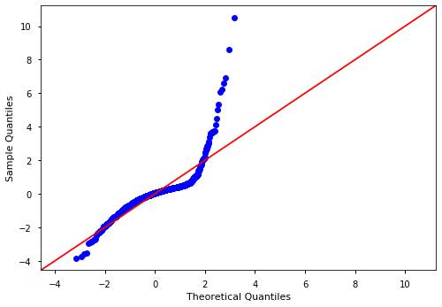
plt.scatter(df_model['revenue'],model.resid)
plt.axhline(0)
<matplotlib.lines.Line2D at 0x7fcaaeae1e50>
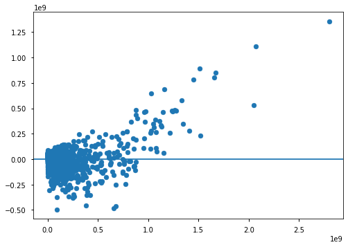
model.pvalues[model.pvalues > .05]
vote_average 0.2895249109734985
mpaa_rating_NC_17 0.5648150551068866
mpaa_rating_NR 0.1968166996286298
mpaa_rating_PG 0.5799786181150344
dtype: float64
df_model.describe()
| runtime | budget | revenue | vote_count | vote_average | popularity | mpaa_rating_NC_17 | mpaa_rating_NR | mpaa_rating_PG | mpaa_rating_PG_13 | mpaa_rating_R | |
|---|---|---|---|---|---|---|---|---|---|---|---|
| count | 1,300.0 | 1,300.0 | 1,300.0 | 1,300.0 | 1,300.0 | 1,300.0 | 1,300.0 | 1,300.0 | 1,300.0 | 1,300.0 | 1,300.0 |
| mean | 109.34153846153846 | 45,900,017.192307696 | 155,390,520.90076923 | 3,048.479230769231 | 6.407538461538461 | 34.06769615384615 | 0.0007692307692307692 | 0.016923076923076923 | 0.13307692307692306 | 0.3830769230769231 | 0.4592307692307692 |
| std | 16.982950217591988 | 55,641,755.675761335 | 267,617,277.28683838 | 3,757.7980193390854 | 0.940552522610109 | 37.70137389978608 | 0.027735009811261455 | 0.12903291709239778 | 0.33978856386766754 | 0.48632388956748096 | 0.49852687591716155 |
| min | 78.0 | 10.0 | 1.0 | 0.0 | 0.0 | 0.6 | 0.0 | 0.0 | 0.0 | 0.0 | 0.0 |
| 25% | 96.0 | 10,000,000.0 | 10,276,110.0 | 602.0 | 5.9 | 14.20425 | 0.0 | 0.0 | 0.0 | 0.0 | 0.0 |
| 50% | 107.0 | 25,000,000.0 | 52,410,264.5 | 1,638.5 | 6.4 | 22.548499999999997 | 0.0 | 0.0 | 0.0 | 0.0 | 0.0 |
| 75% | 119.0 | 58,850,000.0 | 170,262,729.25 | 4,059.5 | 7.0 | 38.3885 | 0.0 | 0.0 | 0.0 | 1.0 | 1.0 |
| max | 188.0 | 356,000,000.0 | 2,797,800,564.0 | 25,296.0 | 9.0 | 397.25699999999995 | 1.0 | 1.0 | 1.0 | 1.0 | 1.0 |
coeffs=model.params
coeffs.sort_values().round(2)
mpaa_rating_R -107,910,689.6
mpaa_rating_PG_13 -93,510,661.54
mpaa_rating_NC_17 -79,145,307.65
mpaa_rating_NR -67,454,338.05
mpaa_rating_PG -24,585,817.09
vote_average -4,853,861.74
runtime -535,177.79
budget 1.95
vote_count 32,995.71
popularity 1,013,738.37
Intercept 110,295,537.18
dtype: float64
## Create the final formula and create the model
df
| imdb_id | original_title | title | mpaa_rating | release_date | runtime | budget | revenue | vote_count | vote_average | popularity | adult | original_language | |
|---|---|---|---|---|---|---|---|---|---|---|---|---|---|
| id | |||||||||||||
| 24428 | tt0848228 | The Avengers | The Avengers | PG_13 | 2012-04-25 | 143.0 | 220000000 | 1518815515 | 24252 | 7.7 | 151.095 | False | en |
| 50620 | tt1673434 | The Twilight Saga: Breaking Dawn - Part 2 | The Twilight Saga: Breaking Dawn - Part 2 | PG_13 | 2012-11-13 | 115.0 | 120000000 | 829000000 | 6978 | 6.5 | 73.226 | False | en |
| 82690 | tt1772341 | Wreck-It Ralph | Wreck-It Ralph | PG | 2012-11-01 | 101.0 | 165000000 | 471222889 | 9690 | 7.3 | 70.21300000000001 | False | en |
| 57214 | tt1636826 | Project X | Project X | R | 2012-03-01 | 88.0 | 12000000 | 100000000 | 4399 | 6.7 | 67.687 | False | en |
| 49051 | tt0903624 | The Hobbit: An Unexpected Journey | The Hobbit: An Unexpected Journey | PG_13 | 2012-11-26 | 169.0 | 250000000 | 1021103568 | 14539 | 7.3 | 61.052 | False | en |
| ... | ... | ... | ... | ... | ... | ... | ... | ... | ... | ... | ... | ... | ... |
| 403300 | tt5827916 | A Hidden Life | A Hidden Life | PG_13 | 2019-12-11 | 174.0 | 9000000 | 4612788 | 370 | 7.2 | 15.434000000000001 | False | en |
| 520900 | tt6439020 | The Personal History of David Copperfield | The Personal History of David Copperfield | PG | 2019-11-07 | 119.0 | 15600000 | 11620337 | 211 | 6.7 | 15.075999999999999 | False | en |
| 616584 | tt10521814 | K-12 | K-12 | R | 2019-09-05 | 92.0 | 50000 | 359377 | 171 | 7.6 | 14.822000000000001 | False | en |
| 619265 | tt10555920 | The Cabin House | The Cabin House | R | 2019-10-31 | 120.0 | 13000000 | 13000000 | 0 | 0.0 | 2.0709999999999997 | False | en |
| 630331 | tt10931434 | Cin-Si Bozuk | Cin-Si Bozuk | NR | 2019-09-06 | 95.0 | 46 | 5 | 0 | 0.0 | 0.622 | False | en |
1300 rows × 13 columns
num_cols = [col for col in df_model.columns if col.startswith('mpaa')==False]
num_cols.remove('revenue')
num_cols
['runtime', 'budget', 'vote_count', 'vote_average', 'popularity']
from sklearn.preprocessing import StandardScaler
scaler = StandardScaler()
scaler
StandardScaler()
df_scaled = df_model.copy()
df_scaled[num_cols] = scaler.fit_transform(df_scaled[num_cols])
df_scaled.describe().round()
| runtime | budget | revenue | vote_count | vote_average | popularity | mpaa_rating_NC_17 | mpaa_rating_NR | mpaa_rating_PG | mpaa_rating_PG_13 | mpaa_rating_R | |
|---|---|---|---|---|---|---|---|---|---|---|---|
| count | 1,300.0 | 1,300.0 | 1,300.0 | 1,300.0 | 1,300.0 | 1,300.0 | 1,300.0 | 1,300.0 | 1,300.0 | 1,300.0 | 1,300.0 |
| mean | -0.0 | -0.0 | 155,390,521.0 | -0.0 | 0.0 | 0.0 | 0.0 | 0.0 | 0.0 | 0.0 | 0.0 |
| std | 1.0 | 1.0 | 267,617,277.0 | 1.0 | 1.0 | 1.0 | 0.0 | 0.0 | 0.0 | 0.0 | 0.0 |
| min | -2.0 | -1.0 | 1.0 | -1.0 | -7.0 | -1.0 | 0.0 | 0.0 | 0.0 | 0.0 | 0.0 |
| 25% | -1.0 | -1.0 | 10,276,110.0 | -1.0 | -1.0 | -1.0 | 0.0 | 0.0 | 0.0 | 0.0 | 0.0 |
| 50% | -0.0 | -0.0 | 52,410,264.0 | -0.0 | -0.0 | -0.0 | 0.0 | 0.0 | 0.0 | 0.0 | 0.0 |
| 75% | 1.0 | 0.0 | 170,262,729.0 | 0.0 | 1.0 | 0.0 | 0.0 | 0.0 | 0.0 | 1.0 | 1.0 |
| max | 5.0 | 6.0 | 2,797,800,564.0 | 6.0 | 3.0 | 10.0 | 1.0 | 1.0 | 1.0 | 1.0 | 1.0 |
## Drop any multicollinear features
# None
## Create a string representing the right side of the ~ in our formula
features = ' + '.join(df_scaled.drop('revenue',axis=1).columns)
## Create the final formula and create the model
f = "revenue~"+features
model = smf.ols(f, df_scaled).fit()
display(model.summary())
sm.graphics.qqplot(model.resid,line='45',fit=True);
| Dep. Variable: | revenue | R-squared: | 0.768 |
|---|---|---|---|
| Model: | OLS | Adj. R-squared: | 0.766 |
| Method: | Least Squares | F-statistic: | 425.6 |
| Date: | Thu, 08 Apr 2021 | Prob (F-statistic): | 0.00 |
| Time: | 15:39:56 | Log-Likelihood: | -26122. |
| No. Observations: | 1300 | AIC: | 5.227e+04 |
| Df Residuals: | 1289 | BIC: | 5.232e+04 |
| Df Model: | 10 | ||
| Covariance Type: | nonrobust |
| coef | std err | t | P>|t| | [0.025 | 0.975] | |
|---|---|---|---|---|---|---|
| Intercept | 2.452e+08 | 4.39e+07 | 5.593 | 0.000 | 1.59e+08 | 3.31e+08 |
| runtime | -9.085e+06 | 4.48e+06 | -2.027 | 0.043 | -1.79e+07 | -2.91e+05 |
| budget | 1.084e+08 | 5.74e+06 | 18.884 | 0.000 | 9.71e+07 | 1.2e+08 |
| vote_count | 1.239e+08 | 5.42e+06 | 22.858 | 0.000 | 1.13e+08 | 1.35e+08 |
| vote_average | -4.564e+06 | 4.31e+06 | -1.060 | 0.290 | -1.3e+07 | 3.89e+06 |
| popularity | 3.82e+07 | 4.43e+06 | 8.615 | 0.000 | 2.95e+07 | 4.69e+07 |
| mpaa_rating_NC_17 | -7.915e+07 | 1.37e+08 | -0.576 | 0.565 | -3.49e+08 | 1.9e+08 |
| mpaa_rating_NR | -6.745e+07 | 5.22e+07 | -1.291 | 0.197 | -1.7e+08 | 3.5e+07 |
| mpaa_rating_PG | -2.459e+07 | 4.44e+07 | -0.554 | 0.580 | -1.12e+08 | 6.25e+07 |
| mpaa_rating_PG_13 | -9.351e+07 | 4.42e+07 | -2.116 | 0.035 | -1.8e+08 | -6.81e+06 |
| mpaa_rating_R | -1.079e+08 | 4.45e+07 | -2.426 | 0.015 | -1.95e+08 | -2.07e+07 |
| Omnibus: | 849.330 | Durbin-Watson: | 1.925 |
|---|---|---|---|
| Prob(Omnibus): | 0.000 | Jarque-Bera (JB): | 25908.797 |
| Skew: | 2.547 | Prob(JB): | 0.00 |
| Kurtosis: | 24.269 | Cond. No. | 65.7 |
Notes:
[1] Standard Errors assume that the covariance matrix of the errors is correctly specified.
model.params.sort_values()
mpaa_rating_R -107,910,689.5989016
mpaa_rating_PG_13 -93,510,661.5373828
mpaa_rating_NC_17 -79,145,307.64523709
mpaa_rating_NR -67,454,338.0511286
mpaa_rating_PG -24,585,817.092087924
runtime -9,085,401.349186601
vote_average -4,563,555.680562051
popularity 38,204,626.77571376
budget 108,384,369.67632665
vote_count 123,943,528.11166127
Intercept 245,242,427.2375865
dtype: float64
TO DOs#
In today’s study group, we did NOT demo the absolute best way to prepare and perform a regression model.
Additional Topics to discuss tomorrow:
train-test-split/cross-validation
Using VIF to deal with multicollinearity
Using feature selection methods
Outlier removal